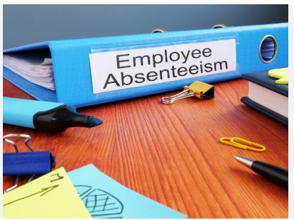

This project is an Exploratory Data Analysis (EDA) on global layoffs using SQL. The goal is to uncover trends, patterns, and insights into how layoffs have affected different companies, industries, and locations over time.

The absenteeism data of employees is analysed by cleaning and exploring the data in SQL .
Dashboard based on employee absenteeism is built.
Project Distribution is analysed by cleaning and exploring the data in SQL.

A dashboard is built to analyse the Project Distribution in a company.
The Spotify dataset is analysed by cleaning and exploring the data in SQL.
A Dashboard is built to analyse the beats & bytes of Spotify Music dataset.